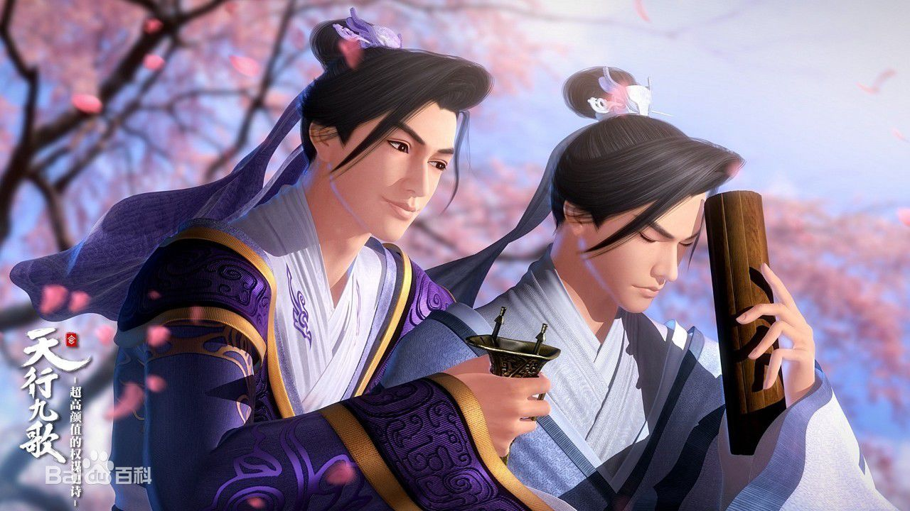
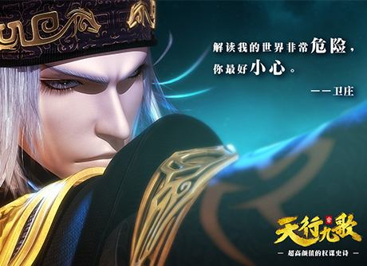
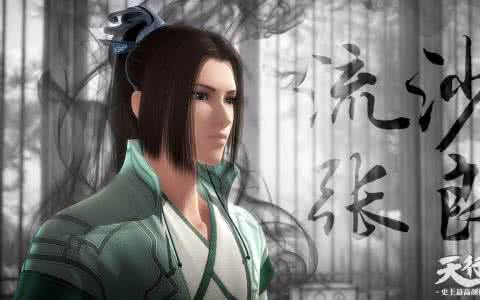
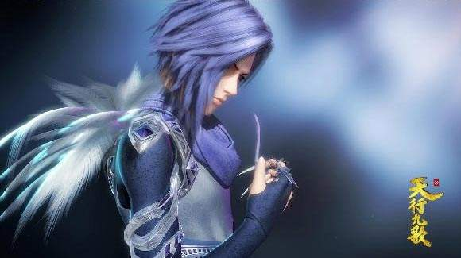
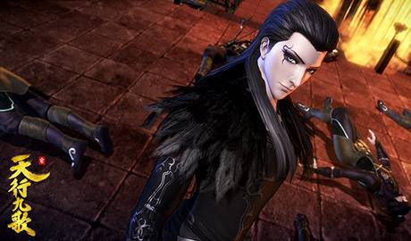
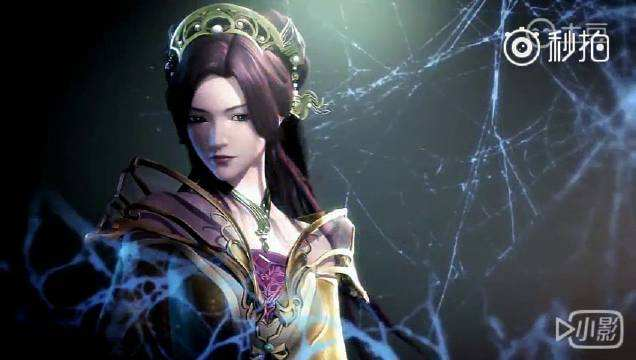
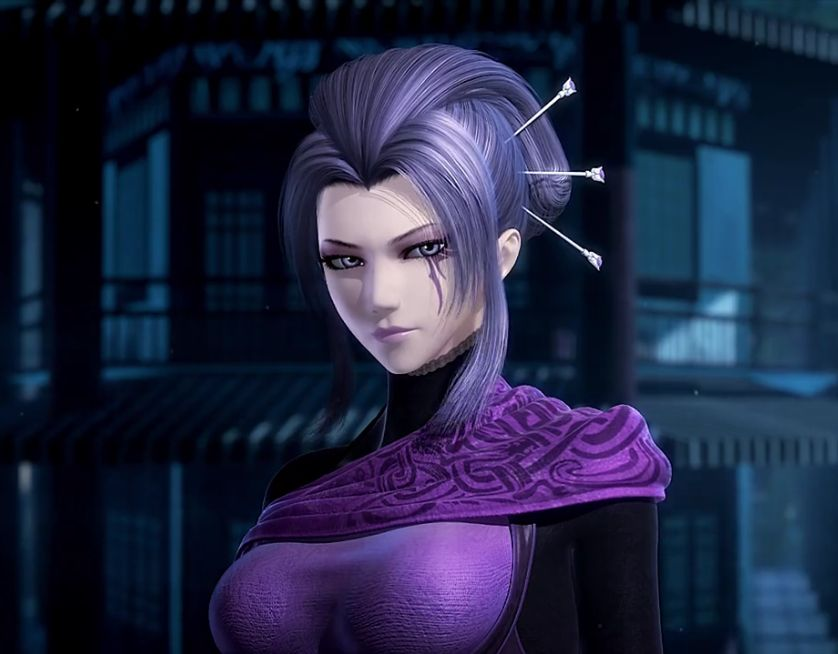
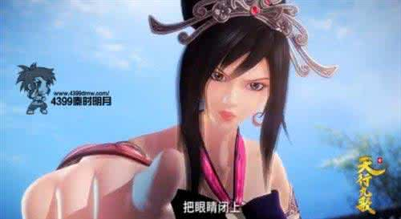
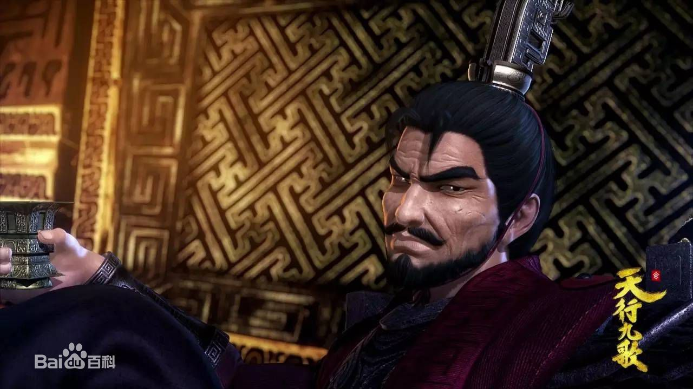

韩非：
总男主角。韩国王室出身，韩王第九子，虽然不会武功，但智慧超绝，有经国之略；少年游学小圣贤庄，是荀子最好的学生，也是韩国的希望之星；后来却突然变得愤世嫉俗，流连于花酒之间，却暗中与另一名韩国的天才少年卫庄一起组建了闻名天下的“流沙”组织。

卫庄：
主要角色。鬼谷传人，“流沙”的创始人之一，曾经生活在韩国王宫的冷宫中，有时以神秘人的身份出现在韩国都城新郑最大的烟花之地紫兰轩。外表冷峻，武功高强，凌厉的双目中带着仇恨、欲望，以及洞察一切的魄力。韩国所有的风云变化，似乎都无一例外地落入他的眼中。

张良：
主要角色。韩国相国张开地之孙，素衣公子，天性纯良，五世为相，少年成名，聪颖至极，最仰慕的人就是韩非，一生的志愿也是复兴韩国，遂成为韩非和卫庄最重要的伙伴。

白凤：
“夜幕”组织“百鸟”中的顶尖杀手之一，墨鸦直属下级，天赋禀异、轻功卓越的少年。与墨鸦不同，他在杀人时仍有一丝迷茫。

墨鸦：
“夜幕”组织“百鸟”中的第一杀手，与白凤同为姬无夜的两名近卫，是白凤最信任的朋友与最信赖的上级，轻功卓越，行事利落，从不拖泥带水，对少年时期的白凤的影响颇深，促使白凤不断地突破自己。

弄玉：
韩国紫兰轩头牌琴姬，极受紫女重视。琴艺卓绝，可引百鸟。身怀绝技，但也因此一生命运坎坷。

紫女：
主要角色。紫兰轩的老板，身着一身紫色的裙衫，成熟，妩媚，富有女人味，对卫庄有着非同一般的执着和信任，亦是其得力的左右手，但是很多人不知道，这个出入风尘的女子，竟然有着另一个重要的身份。

红莲公主：
韩王安的掌上明珠，韩宇、韩非的妹妹，封号“红莲”。正在习武中，同时有研究毒术。

姬无夜：
战国末期韩国大将军，号称“韩国百年来最强之将”。权倾朝野，专横跋扈，拥有私人杀手组织“夜幕”。自身的武功也十分强悍，其横练功力之深，连能够洞穿层层护甲的特制铜刺也无法伤及他的血肉之躯。
剧情简介
作品评价
设计团队
返回首页